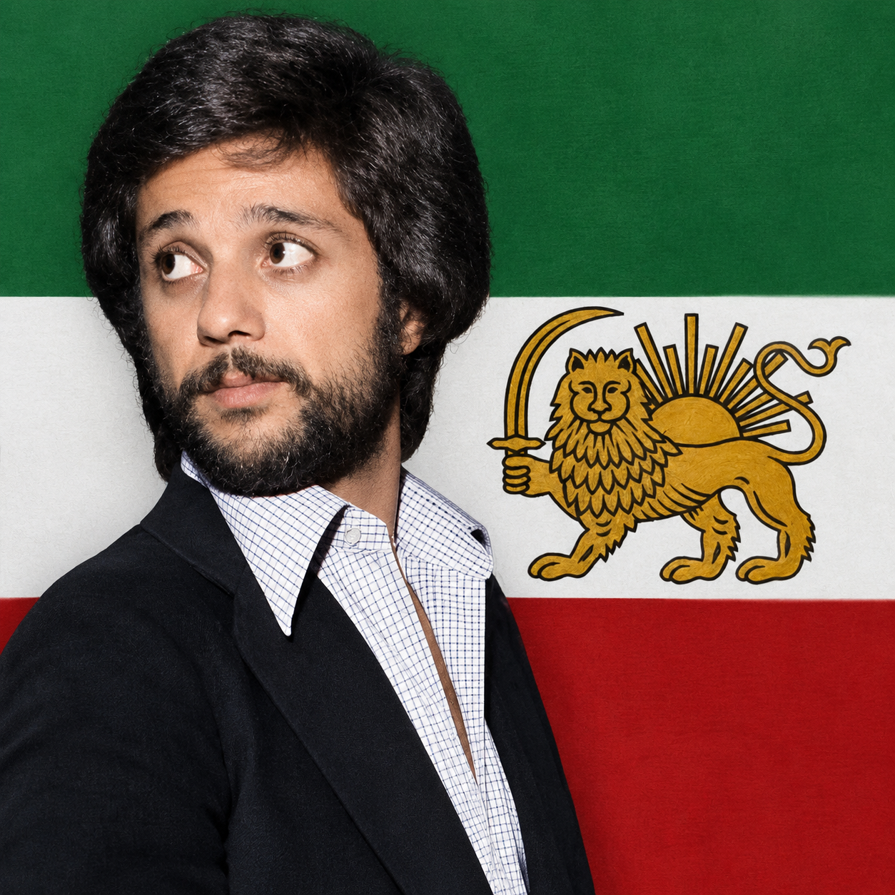
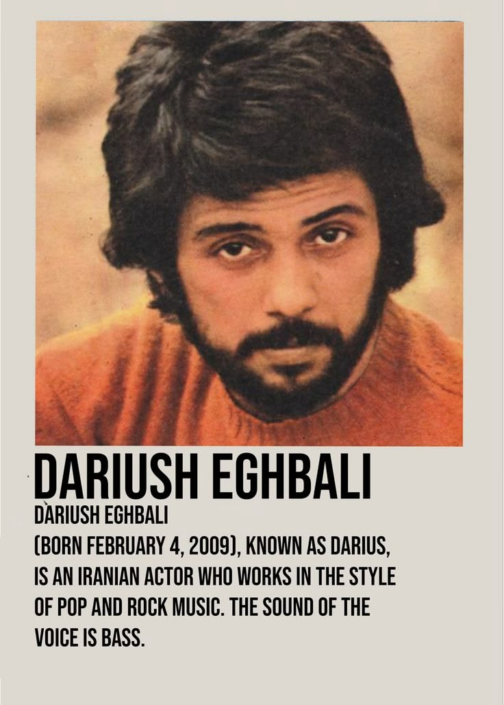

زندگینامه هنرمند
صدایی ماندگار در تاریخ موسیقی ایران

داریوش اقبالی، خواننده و هنرمند شناختهشده ایرانی، یکی از چهرههای تأثیرگذار موسیقی معاصر ایران به شمار میرود.
فعالیت هنری او از سالهای جوانی آغاز شد و در طول سالها با انتشار آثار مختلف، صدای او به یکی از صداهای ماندگار موسیقی فارسی تبدیل شد.
آثار داریوش در سبکهای مختلفی شکل گرفتهاند و بسیاری از ترانههای او با موضوعاتی همچون عشق، جامعه، انسان و زندگی پیوند خوردهاند.
داریوش اقبالی در تهران متولد شد.
فعالیت حرفهای داریوش در عرصه موسیقی آغاز شد و به تدریج شناخته شد.
آثار و ترانههای داریوش بیش از پیش مورد توجه مخاطبان قرار گرفتند.
داریوش فعالیت هنری خود را خارج از ایران ادامه داد و آثار متعددی منتشر کرد.
بخشی از آثار و ترانههای ماندگار داریوش

«صدایی که با گذشت سالها همچنان در خاطرهها باقی مانده است.»
— داریوش اقبالی